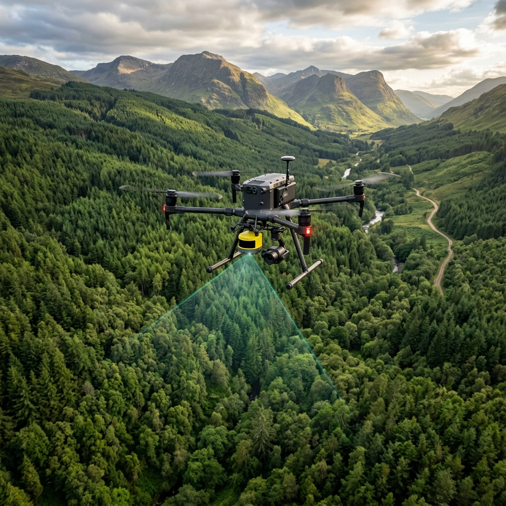
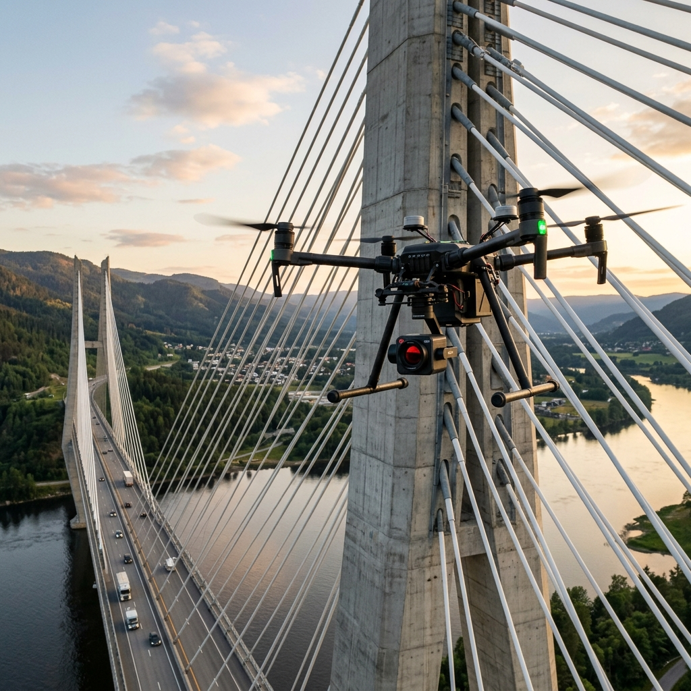
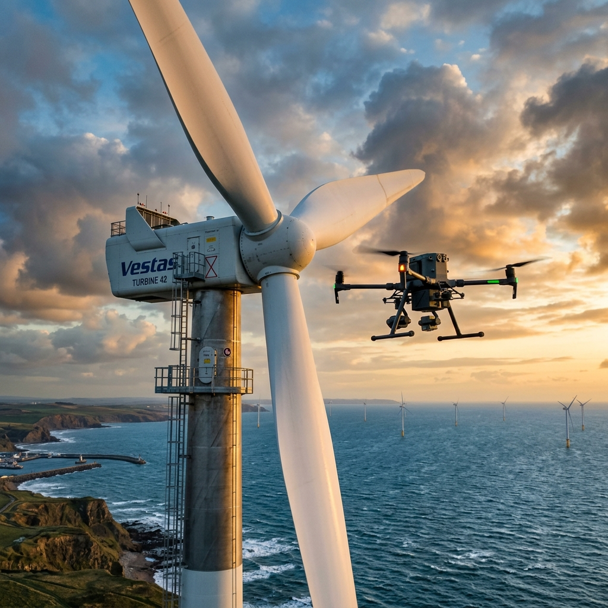
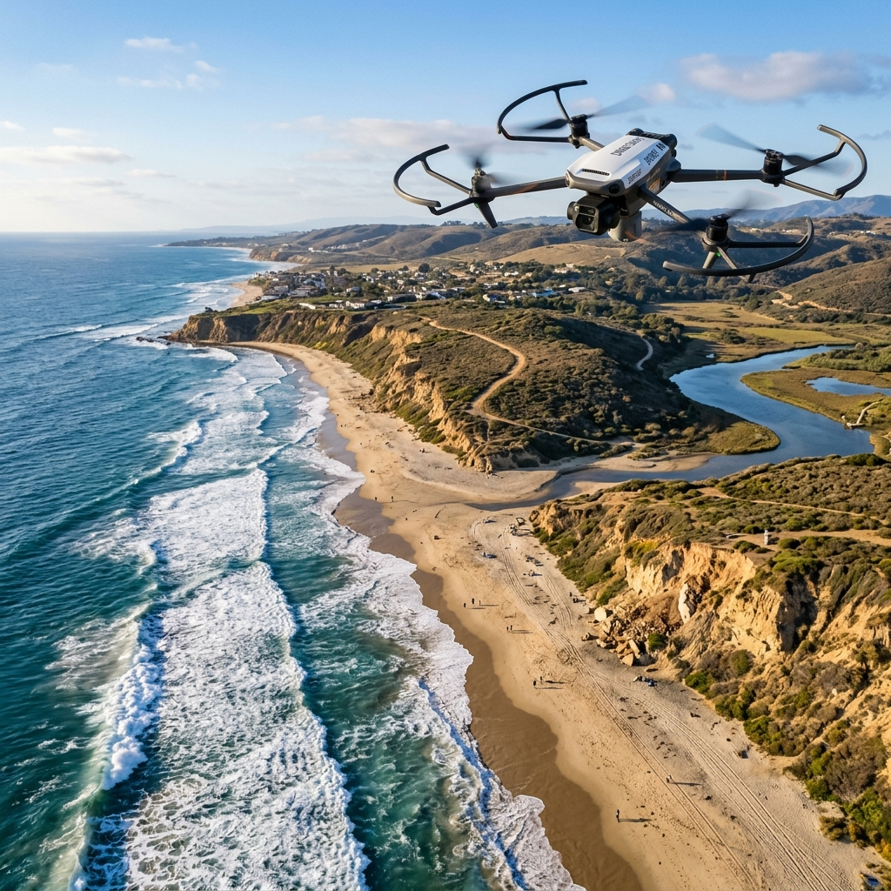

Kiểm tra bằng máy bay không người lái
Dịch vụ kiểm tra bằng máy bay không người lái dễ dàng và đáng tin cậy theo yêu cầu của từng khách hàng.
XEM THÊMThực hiện nhiệm vụ
Thực hiện nhiệm vụ an toàn, dễ dàng tại các vị trí thi công và tòa nhà cao tầng với máy bay không người lái.
Nhận dữ liệu
Nhận dữ liệu chuẩn xác cao về tình trạng của công trình ngay cả ở những vị trí khó tiếp cận.
Kiểm tra mái nhà
Chụp ảnh và đánh giá toàn diện phần mái nhà giúp tìm ra các vị trí hỏng hóc nhanh chóng.
Kiểm tra năng lượng
Khảo sát các tấm pin năng lượng mặt trời và lưới điện một cách toàn diện và chính xác.
Kiểm tra cầu
Máy bay không người lái giúp bạn kiểm tra các cấu trúc cầu phức tạp mà không rủi ro an toàn.
Tùy chỉnh
Cung cấp giải pháp được cá nhân hóa theo từng nhu cầu doanh nghiệp của bạn.
Bắt đầu với dịch vụ kiểm tra bằng máy bay không người lái của chúng tôi ngay hôm nay
Tìm hiểu thêm về cách chúng tôi có thể giúp dự án của bạn.
NHẬN BÁO GIÁ NGAY
Kiểm tra mái nhà

Thu thập dữ liệu có giá trị
Khảo sát, chụp ảnh và thu thập dữ liệu về tình trạng mái nhà của các khu công nghiệp, kho xưởng và nhà ở mà không cần phải leo lên mái, giảm thiểu rủi ro tai nạn lao động.

Cho phép ra quyết định tốt hơn
Cung cấp hình ảnh chất lượng cao để phát hiện rò rỉ, nứt vỡ hoặc các hư hỏng tiềm ẩn. Các chuyên gia sẽ có cái nhìn tổng quan nhất để lên phương án sửa chữa phù hợp.

Chúng tôi đứng về phía bạn
Chúng tôi hiểu sự phức tạp của quá trình kiểm tra định kỳ. Hệ thống báo cáo hình ảnh và video cung cấp minh chứng rõ ràng và minh bạch cho phía bảo hiểm.
Kiểm tra bồn chứa

Kiểm tra cơ sở hạ tầng
Kiểm tra tình trạng ăn mòn, rò rỉ ở các bồn chứa công nghiệp quy mô lớn. Drone có thể ghi lại hình ảnh bề mặt của cấu trúc với độ chính xác cao.

Tiếp cận ở các vị trí đầy thách thức
Dễ dàng bay vào và kiểm tra các vị trí cao, hẹp và nguy hiểm đối với con người, giúp tiết kiệm chi phí giàn giáo và bảo trì định kỳ.
An toàn là trên hết
Với góc nhìn từ trên không và các cảm biến chướng ngại vật, công việc kiểm tra trở nên an toàn tuyệt đối. Mọi rủi ro cho người lao động được loại bỏ hoàn toàn.
Kiểm tra tòa tháp

Kiểm tra tất cả các góc
Thực hiện các chuyến bay quét xung quanh các tháp viễn thông, cột điện cao thế và tòa nhà chọc trời. Thu thập dữ liệu toàn cảnh 360 độ của cấu trúc.

Thu thập dữ liệu trước khi sửa chữa
Lập mô hình 3D thực tế của công trình trước khi tiến hành bảo trì bảo dưỡng, hỗ trợ đội ngũ kỹ thuật đưa ra phương pháp an toàn và chuẩn xác nhất.

Kiểm tra nhanh chóng, hiệu quả
Việc sử dụng máy bay không người lái rút ngắn thời gian kiểm tra từ vài ngày xuống còn vài giờ. Tiết kiệm nhân lực và đảm bảo tính liên tục của hệ thống.
Kiểm tra cầu

Giới thiệu
Các công trình cầu luôn phải đối mặt với sự mài mòn của thời tiết và tải trọng. Việc kiểm tra định kỳ bằng Drone là giải pháp đột phá về cả chi phí lẫn an toàn.
Hiểu điều kiện cầu
Quét và lập bản đồ các vết nứt nhỏ, tình trạng rỉ sét và đánh giá kết cấu bê tông, thép ở gầm cầu hoặc trụ cầu nằm giữa dòng nước chảy xiết.

Kiểm tra địa hình
Không chỉ kiểm tra cấu trúc cầu, máy bay không người lái còn đánh giá được cả sự thay đổi của địa hình ven bờ, dòng chảy và nguy cơ xói mòn.
Kiểm tra năng lượng

Kiểm tra năng lượng mặt trời khu dân cư & công nghiệp
Sử dụng camera nhiệt kết hợp với hình ảnh quang học để phát hiện các tấm nền năng lượng mặt trời bị hỏng hoặc hoạt động kém hiệu quả. Giúp tối ưu hóa sản lượng điện sinh ra và phát hiện sớm các nguy cơ cháy nổ tiềm ẩn.